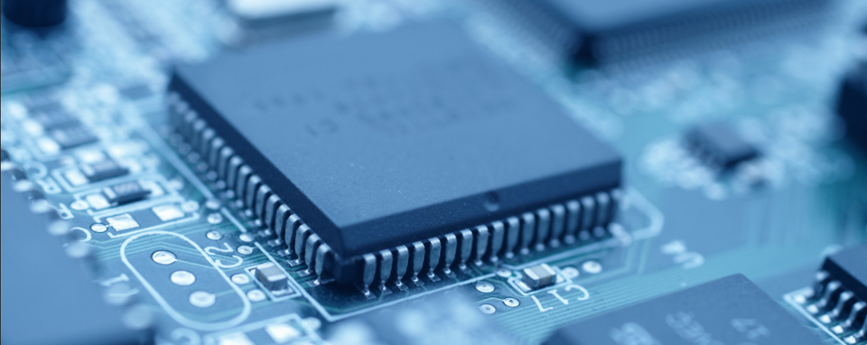
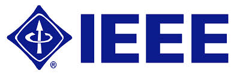
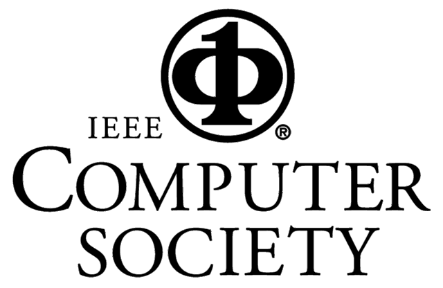

<!DOCTYPE HTML PUBLIC "-//W3C//DTD HTML 4.01 Transitional//EN">
<html>
<head>
</head>
<body></body>
</html>
<meta charset="utf-8"><meta http-equiv="Content-Language" content="en-us">
<title>SEED 2022 Home</title>
<base target="_top" />
<style type="text/css">.inner-wrapper{
            margin-left: 50%;
            width: 1150px;
        }
        .inner-wrapper img:nth-child(1){
            margin-left: -50%;
        } 
        .inner-wrapper img{
        margin-left: 5px;
      }
</style>

<!--
    <table border="0" cellpadding="0" cellspacing="0" style="border-collapse: collapse" bordercolor="#111111" width="95%" height="87">
        <tr>
            <td width="40%" height="150">
                <p align="center">
                    <b><font size="5" color="#808000" face="Arial">SEED-2022</font></b>
                <p align="center"><b><font face="Arial" size="4" color="#808080">Septermber 30-October 2, 2018</font></b>
                <p align="center" style="margin-top: 0; margin-bottom: 0"><b><font face="Arial" size="4" color="#000080">&nbsp;Raleigh, North Carolina, USA</font></b>
            </td>
        </tr>
    </table>
    -->
    <p align="center"><b><font color="#808000" face="Arial" size="5">SEED 2022</font> </b></p>

    <p align="center"><b><font color="#808080" face="Arial" size="4">September 26 - September 27, 2022</font> </b></p>

    <p align="center" style="margin-top: 0; margin-bottom:0"><b><font color="#000080" face="Arial" size="4">&nbsp;Held Virtually</font> </b></p>

    <!--
    <div class="warpper" style="overflow:hidden; width: 100%; height: 150px; margin-top:30px">
    <div class="inner-wrapper">  </div>
    </div>
    -->

<hr />
<p style="margin-top: 0; margin-bottom: 0"></p>

<p style="margin-top: 0; margin-bottom: 0"><b><span style="FONT-FAMILY: Arial"><font color="#000080" size="5">COMMITTEES</font></span></b></p>

<p align="left" class="MsoNormal" style="none; line-height: 100%; margin-top: 0; margin-bottom: 0"></p>

<p align="left" class="MsoNormal" style="none; line-height: 100%; margin-top: 0; margin-bottom: 0"></p>
<p></p>

<p align="left" class="MsoNormal" style="none; margin-top: 0; margin-bottom: 0"><font face="Arial" size="3"><b>General Chairs:</b><br />
&nbsp;Omer Khan, University of Connecticut, USA<br />
&nbsp;Jakub Szefer, Yale University, USA </font><br />
<font size="1">&nbsp; </font></p>

<p align="left" class="MsoNormal" style="none; margin-top: 0; margin-bottom: 0"><font face="Arial" size="3"><b>Program Chairs:</b><br />
&nbsp;Hsien-Hsin Sean Lee, Meta, USA<br />
&nbsp;Yuval Yarom, University of Adelaide, Australia</font><br />
<font size="1">&nbsp; </font></p>

<p align="left" class="MsoNormal" style="none; margin-top: 0; margin-bottom: 0"><font face="Arial" size="3"><b>Submissions Chair:</b><br />
&nbsp;Sioli O'Connell, University of Adelaide, Australia</font><br />
<font size="1">&nbsp; </font></p>

<p align="left" class="MsoNormal" style="none; margin-top: 0; margin-bottom: 0"><font face="Arial" size="3"><b>Finance Chairs:</b></font><br />
&nbsp;duties performed by general chairs for SEED 2022<br />
<font size="1">&nbsp;</font></p>

<p align="left" class="MsoNormal" style="none; margin-top: 0; margin-bottom: 0"><font face="Arial" size="3"><b>Publications Chair:</b><br />
&nbsp;Daniel Genkin, Georgia Tech, USA</font><br />
<font size="1">&nbsp; </font></p>

<p align="left" class="MsoNormal" style="none; margin-top: 0; margin-bottom: 0"><font face="Arial" size="3"><b>Publicity Chairs:</b><br />
&nbsp;Amro Awad, NC State University, USA<br />
&nbsp;Yossi Oren, Ben Gurion University, Israel<br />
&nbsp;Hsu-Chun Hsiao, National Taiwan University, Taiwan</font><br />
<font size="1">&nbsp; </font></p>

<p align="left" class="MsoNormal" style="none; margin-top: 0; margin-bottom: 0"><font face="Arial" size="3"><b>Virtual Arrangements Chairs:</b><br />
&nbsp;</font></p>
<p align="left" class="MsoNormal" style="none; margin-top: 0; margin-bottom: 0"><font face="Arial" size="3">&nbsp;</font><br />
<font size="1">&nbsp; </font></p>

<!--
<p align="left" class="MsoNormal" style="none; margin-top: 0; margin-bottom: 0"><font face="Arial" size="3"><b>Web Chair:</b><br />
&nbsp;Usman Ali, University of Connecticut, USA</font><br />
<font size="1">&nbsp; </font></p>
-->

<p align="left" class="MsoNormal" style="none; margin-top: 0; margin-bottom: 0"><font face="Arial" size="3"><b>Registration Chairs:</b><br />
&nbsp;<br />
&nbsp;</font><br />
<font size="1">&nbsp; </font></p>

<!--
<p align="left" class="MsoNormal" style="none; margin-top: 0; margin-bottom: 0"><font face="Arial" size="3"><b>Artifact Evaluation Chairs:</b><br />
&nbsp;Reetuparna Das, University of Michigan<br />
&nbsp;Timothy Merrifield, VMware<br />
&nbsp;Jason Lowe-Power, UC Davis</font><br />
<font size="1">&nbsp; </font></p>
<p align="left" class="MsoNormal" style="none; margin-top: 0; margin-bottom: 0"></p>
-->

<!--<p align="left" class="MsoNormal" style="none; margin-top: 0; margin-bottom: 0"><font face="Arial" size="3"><b>Artifact Evaluation Chairs:</b><br />
&nbsp;Jason Lowe-Power, UC Davis</font></p>

<p align="left" class="MsoNormal" style="none; margin-top: 0; margin-bottom: 0"><font face="Arial" size="3">&nbsp;Tim Merrifield, VMware</font><br />
<font size="1">&nbsp; </font></p>
<p align="left" class="MsoNormal" style="none; margin-top: 0; margin-bottom: 0"><font face="Arial" size="3"><b>&nbsp;</b></font></p>
-->


<p align="left" class="MsoNormal" style="none; margin-top: 0; margin-bottom: 0"><font face="Arial" size="3"><b>Program Committee:</b></font></p>

<p align="left" class="MsoNormal" style="none; margin-top: 0; margin-bottom: 0"><font face="Arial" size="3">&nbsp;Todd Austin, Michigan</font></p>

<p align="left" class="MsoNormal" style="none; margin-top: 0; margin-bottom: 0"><font face="Arial" size="3">&nbsp;Amro Awad, North Carolina State University</font></p>

<p align="left" class="MsoNormal" style="none; margin-top: 0; margin-bottom: 0"><font face="Arial" size="3">&nbsp;Herbert Bos, VU Amsterdam</font></p>

<p align="left" class="MsoNormal" style="none; margin-top: 0; margin-bottom: 0"><font face="Arial" size="3">&nbsp;Billy Brumley, Tampere University</font><br />

<p align="left" class="MsoNormal" style="none; margin-top: 0; margin-bottom: 0"><font face="Arial" size="3">&nbsp;Yueqiang Chen, NIO</font><br />

<p align="left" class="MsoNormal" style="none; margin-top: 0; margin-bottom: 0"><font face="Arial" size="3">&nbsp;Guoxing Chen, Shanghai Jiao Tong University</font><br />

<p align="left" class="MsoNormal" style="none; margin-top: 0; margin-bottom: 0"><font face="Arial" size="3">&nbsp;Deeksha Dangwal, Meta</font><br />

<p align="left" class="MsoNormal" style="none; margin-top: 0; margin-bottom: 0"><font face="Arial" size="3">&nbsp;Dmitry    Evtyushkin, College of William & Mary</font><br />

<p align="left" class="MsoNormal" style="none; margin-top: 0; margin-bottom: 0"><font face="Arial" size="3">&nbsp;Siddharth Garg, NYU</font><br />

<p align="left" class="MsoNormal" style="none; margin-top: 0; margin-bottom: 0"><font face="Arial" size="3">&nbsp;Shay Gueron, University of Haifa / Amazon</font><br />

<p align="left" class="MsoNormal" style="none; margin-top: 0; margin-bottom: 0"><font face="Arial" size="3">&nbsp;Rui Hou, Chinese Academy of Sciences</font><br />

<p align="left" class="MsoNormal" style="none; margin-top: 0; margin-bottom: 0"><font face="Arial" size="3">&nbsp;Shih-Hao Hung, National Taiwan University</font><br />

<p align="left" class="MsoNormal" style="none; margin-top: 0; margin-bottom: 0"><font face="Arial" size="3">&nbsp;David Kaeli, Northeastern University</font><br />

<p align="left" class="MsoNormal" style="none; margin-top: 0; margin-bottom: 0"><font face="Arial" size="3">&nbsp;Mikhail    Kazdagli, Symmetry Systems Inc</font><br />

<p align="left" class="MsoNormal" style="none; margin-top: 0; margin-bottom: 0"><font face="Arial" size="3">&nbsp;Khaled Khasawneh, George Mason University</font><br />

<p align="left" class="MsoNormal" style="none; margin-top: 0; margin-bottom: 0"><font face="Arial" size="3">&nbsp;Michel Kinsy, Arizona State University</font><br />

<p align="left" class="MsoNormal" style="none; margin-top: 0; margin-bottom: 0"><font face="Arial" size="3">&nbsp;Tamara Silbergleit Lehmen, University of Colorado</font><br />

<p align="left" class="MsoNormal" style="none; margin-top: 0; margin-bottom: 0"><font face="Arial" size="3">&nbsp;Fangfei Liu, Intel Labs</font><br />

<p align="left" class="MsoNormal" style="none; margin-top: 0; margin-bottom: 0"><font face="Arial" size="3">&nbsp;Surya Nepal, Data61, CSIRO</font><br />

<p align="left" class="MsoNormal" style="none; margin-top: 0; margin-bottom: 0"><font face="Arial" size="3">&nbsp;Michael Orshansky, University of Texas at Austin</font><br />

<p align="left" class="MsoNormal" style="none; margin-top: 0; margin-bottom: 0"><font face="Arial" size="3">&nbsp;Cesar Pereida Garcia, Tampere University</font><br />

<p align="left" class="MsoNormal" style="none; margin-top: 0; margin-bottom: 0"><font face="Arial" size="3">&nbsp;Dmitry    Ponomarev, Binghamton University</font><br />

<p align="left" class="MsoNormal" style="none; margin-top: 0; margin-bottom: 0"><font face="Arial" size="3">&nbsp;Kaveh Razavi, ETH Zurich</font><br />

<p align="left" class="MsoNormal" style="none; margin-top: 0; margin-bottom: 0"><font face="Arial" size="3">&nbsp;Eyal Ronen, Tel Aviv University</font><br />

<p align="left" class="MsoNormal" style="none; margin-top: 0; margin-bottom: 0"><font face="Arial" size="3">&nbsp;Nader    Sehatbakhsh, UCLA</font><br />

<p align="left" class="MsoNormal" style="none; margin-top: 0; margin-bottom: 0"><font face="Arial" size="3">&nbsp;Tim Sherwood, UC San Diego</font><br />

<p align="left" class="MsoNormal" style="none; margin-top: 0; margin-bottom: 0"><font face="Arial" size="3">&nbsp;Weidong Shi, University of Houston</font><br />

<p align="left" class="MsoNormal" style="none; margin-top: 0; margin-bottom: 0"><font face="Arial" size="3">&nbsp;Dimitrios Skarlatos, Carnegie Mellon University</font><br />

<p align="left" class="MsoNormal" style="none; margin-top: 0; margin-bottom: 0"><font face="Arial" size="3">&nbsp;Marten van Dijk, Centrum Wiskunde & Informatica</font><br />

<p align="left" class="MsoNormal" style="none; margin-top: 0; margin-bottom: 0"><font face="Arial" size="3">&nbsp;Ashish Venkat, University of Virginia</font><br />

<p align="left" class="MsoNormal" style="none; margin-top: 0; margin-bottom: 0"><font face="Arial" size="3">&nbsp;Guru Venkataramani, George Washington University</font><br />

<p align="left" class="MsoNormal" style="none; margin-top: 0; margin-bottom: 0"><font face="Arial" size="3">&nbsp;Wenjie Xiong, Virginia Tech / Meta</font><br />

<p align="left" class="MsoNormal" style="none; margin-top: 0; margin-bottom: 0"><font face="Arial" size="3">&nbsp;Mengjia Yan, MIT</font><br />

<p align="left" class="MsoNormal" style="none; margin-top: 0; margin-bottom: 0"><font face="Arial" size="3">&nbsp;Jun Yang, University of Pittsburgh</font><br />

<p align="left" class="MsoNormal" style="none; margin-top: 0; margin-bottom: 0"><font face="Arial" size="3">&nbsp;Fan Yao, University of Central Florida</font><br />

<p align="left" class="MsoNormal" style="none; margin-top: 0; margin-bottom: 0"><font face="Arial" size="3">&nbsp;Tuba Yavuz, University of Florida</font><br />

<p align="left" class="MsoNormal" style="none; margin-top: 0; margin-bottom: 0"><font face="Arial" size="3">&nbsp;Zhi Zhang, Data61, CSIRO</font><br />

<p align="left" class="MsoNormal" style="none; margin-top: 0; margin-bottom: 0"><font face="Arial" size="3">&nbsp;Tianwei Zhang, Nanyang Technological University</font><br />

<p align="left" class="MsoNormal" style="none; margin-top: 0; margin-bottom: 0"><font face="Arial" size="3">&nbsp;Yinqian Zhang, Southern Univ of Science & Technology</font><br />

<p align="left" class="MsoNormal" style="none; margin-top: 0; margin-bottom: 0"><font face="Arial" size="3">&nbsp;Huiyang Zhou, North Carolina State University</font><br />

<p></p>
<p class="MsoNormal" style="MARGIN-TOP: 0px; MARGIN-BOTTOM: 0px"><font face="Arial"><b>Steering Committee:</b></font></p>
<p class="MsoNormal" style="MARGIN-TOP: 0px; MARGIN-BOTTOM: 0px"><font face="Arial">&nbsp;Yan Solihin, University of Central Florida</font></p>
<p class="MsoNormal" style="MARGIN-TOP: 0px; MARGIN-BOTTOM: 0px"><font face="Arial">&nbsp;Guru Prasadh Venkataramani, George Washington University</font></p>
<p class="MsoNormal" style="MARGIN-TOP: 0px; MARGIN-BOTTOM: 0px"><font face="Arial">&nbsp;Todd Austin, University of Michigan</font></p>
<p class="MsoNormal" style="MARGIN-TOP: 0px; MARGIN-BOTTOM: 0px"><font face="Arial">&nbsp;David Kaeli, Northestern University</font></p>
<p class="MsoNormal" style="MARGIN-TOP: 0px; MARGIN-BOTTOM: 0px"><font face="Arial">&nbsp;Milos Prvulovic, Georgia Institute of Technology</font></p>
<p class="MsoNormal" style="MARGIN-TOP: 0px; MARGIN-BOTTOM: 0px"><font face="Arial">&nbsp;Ruby B. Lee, Princeton University</font></p>
<p class="MsoNormal" style="MARGIN-TOP: 0px; MARGIN-BOTTOM: 0px"><font face="Arial">&nbsp;Deborah Shands, SRI International</font></p>


<font size="1">&nbsp; </font></p>

<p class="MsoNormal" style="margin-top: 0; margin-bottom: 0"><font face="Arial" size="3">&nbsp;&nbsp;&nbsp;&nbsp; </font></p>

<p class="MsoNormal" style="margin-top: 0; margin-bottom: 0"></p>

<p class="MsoNormal" style="margin-top: 0; margin-bottom: 0"></p>

<p align="center"><span class="style9"><font size="4">Sponsored by:</font></span></p> <p align="center"> <a href="http://www.ieee.org/index.html" target="_top"></a>&nbsp; &nbsp; <a href="http://www.computer.org/portal/web/guest/home" target="_top"></a>&nbsp; &nbsp;<a target="_blank" href="https://research.fb.com/"></a>&nbsp; &nbsp;&nbsp;</p>
<!--<a target="_blank" href="http://www.vmware.com/"></a>&nbsp; &nbsp;&nbsp; &nbsp;<a target="_blank" href="https://research.fb.com/"></a> </p> <br />
-->

<hr />
